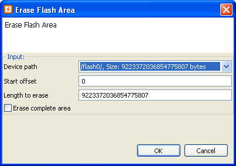

Erase a flash area is a way to clear out a specific region on a flash device.
Please make sure the preferences are correctly configured as described in Flash Kit Preferences. Also make sure that:


Connect a mobile equipment and wait until it is in state "idle". The erase area task can be executed by:
The following dialog will pop-up and user must fill in correct values in order to start erase task.
